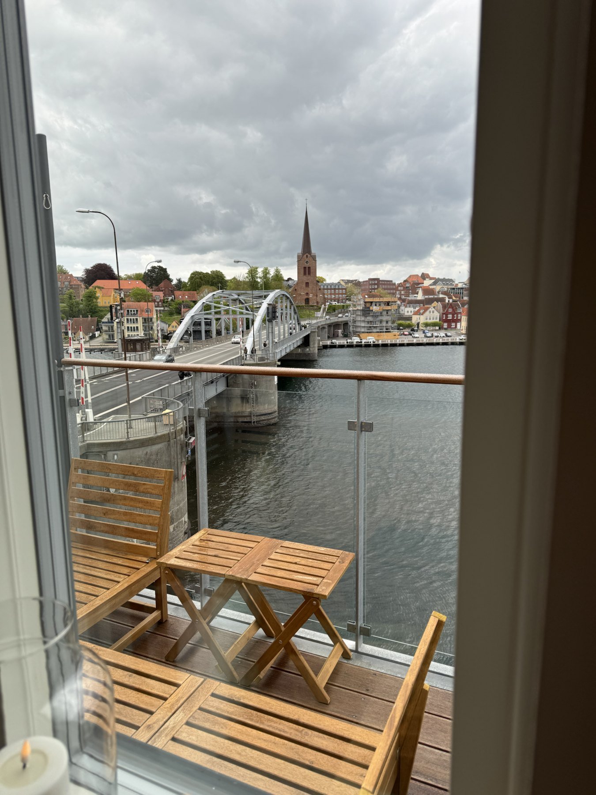
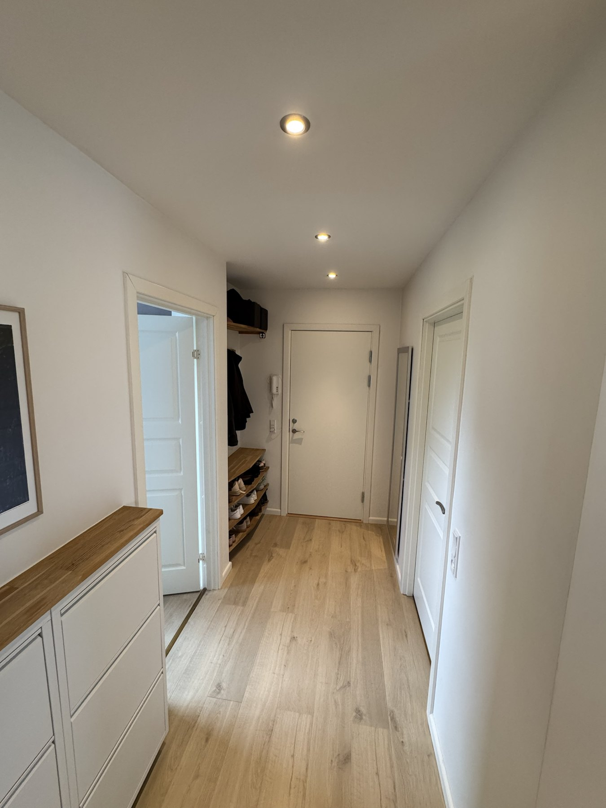

Udsigt fra opholdsrum
Udsigt fra opholdsrum
 Køkken
Køkken
 Karnap og altan
Karnap og altan
Privat salg · Sønderborg
Ejerlejlighed ved Alssund med altan og udsigt
Velindrettet 3-værelses lejlighed på 4. sal med stort køkken-alrum, ny altan fra 2025 og udsigt over Alssund og broen. Beliggenheden giver kort afstand til centrum, station, busforbindelser, universitetet, Sønderborg Slot og havnemiljøet.
Kort fortalt
Det får du
En ejerlejlighed med en enkel og anvendelig planløsning: stort køkken-alrum, to værelser, bad og altan. Boligens naturlige samlingspunkt er det åbne køkken-alrum, hvor ophold, madlavning og udsigt mod vandet hænger sammen. Den passer godt til både par, singler, studerende med behov for ekstra plads eller dig, der vil have et separat kontor/gæsteværelse.
- 93 m2 bolig samt 6 m2 altan.
- 4. sal.
- To soveværelser og stort køkken-alrum.
- Altan fra 2025 med adgang via dør i karnappen.
- Udsigt over Alssund og broen.
- Kælder-/depotrum, cykelparkering og parkering.
- Fælles udearealer ved vandet.
- Fiberinternet installeret.
- Husdyr tilladt og fleksibel overtagelse.
Galleri
Rum, udsigt og detaljer




Indretning
Køkken-alrum som hjemmets samlingspunkt
Lejligheden er centreret omkring det åbne køkken-alrum, hvor de lyse fronter, mørke bordplader og integrerede hvidevarer giver et roligt og gennemført udtryk. Her er plads til både spisebord, ophold og hverdagens samlingspunkt, mens karnappen og altandøren trækker udsigten ind i rummet.
Planløsningen giver to regulære værelser, et funktionelt bad og en entré/gang, der binder boligen enkelt sammen. Det ene værelse kan fungere som soveværelse, mens det andet er oplagt som kontor, gæsteværelse eller ekstra soveværelse.
Forbedringer
Løbende opdateret bolig og ejendom
Ud over totalrenoveringen i 2018 er der lavet flere nyere forbedringer, som styrker både komfort, energiforhold og den daglige brug af boligen.
- 2022Ejerforeningen fik fjernvarme til alle lejligheder.
- 2023Nye lavenergivinduer og ny karnap.
- 2024Ny hoveddør til opgangen.
- 2025Ny altan med adgang via dør i karnappen og udsigt over Alssund og broen.
Økonomi
- Udbudspris
- 2.600.000 kr.
- Ejerudgift
- Oplyses ved henvendelse
- Fællesudgifter
- 3.650 kr./md.
- Varme
- 7.920 kr. aconto / 7.440 kr. brugt sidste år
- Overtagelse
- Fleksibel
Boligen
- Type
- Ejerlejlighed
- Etage
- 4. sal, uden elevator
- Værelser
- 3, heraf 2 soveværelser
- Energimærke
- C
- Altan
- 6 m2, etableret 2025
- Byggeår
- 1906/1995
- Tinglyst areal
- 86 m2
Ejendom og faciliteter
Praktiske rammer tæt på vandet
Det historiske salgsmateriale fremhæver fællesarealer foran vandet og i gården samt en række praktiske faciliteter i ejendommen. Siden er ejendommen blandt andet opdateret med fjernvarme til alle lejligheder og ny hoveddør til opgangen.
- Cykelskur og vaskerum.
- Fælles havemøbler og udeareal ved vandet.
- Kælderrum/depot.
- Unummereret parkeringsplads er tidligere oplyst.
- Bådplads nr. C er nævnt i historisk materiale og bør bekræftes som aktuel.
Plantegning
Overskuelig plan med altan og to værelser

Plantegningen viser køkken-alrum, to værelser, bad, entré og altan. Mål og rumfordeling er vejledende og bør kontrolleres i de relevante dokumenter.
Beliggenhed
Sønderborg tæt på transport, byliv og vand
Sundgade 1 ligger centralt i Sønderborg med nem adgang til både hverdagslogistik og byens mest efterspurgte steder. Området er relevant for købere, der vil bo tæt på offentlig transport, uddannelse, centrum og byens historiske miljø. Beliggenheden ved Alssund, strandpromenaden, Sønderborg Slot og broen er blandt områdets klare kvaliteter.
Fremvisning og spørgsmål
Kontakt sælger direkte
Send en mail til Søren for dokumenter, spørgsmål eller aftale om fremvisning. Telefonnummer deles ikke offentligt, men kan udveksles efter den første kontakt.
Forbehold
Salgsmaterialet er udarbejdet til orientering ved privat salg. Alle oplysninger, mål, arealer, økonomiske tal, plantegning, kortangivelser og beskrivelser er vejledende og kan være afrundede eller ændre sig. Køber opfordres til selv at kontrollere oplysningerne i relevante dokumenter, hos ejerforening/administrator og hos egne rådgivere, før der indgås aftale.